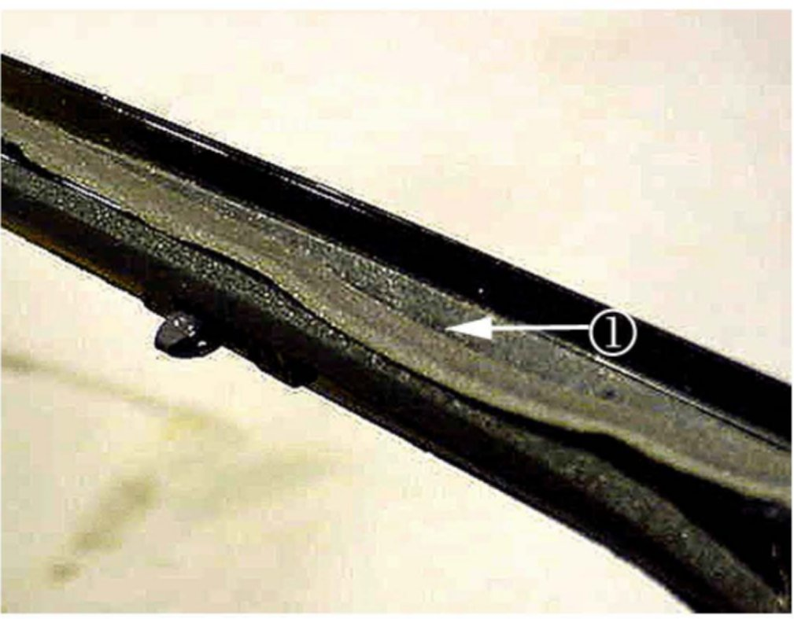
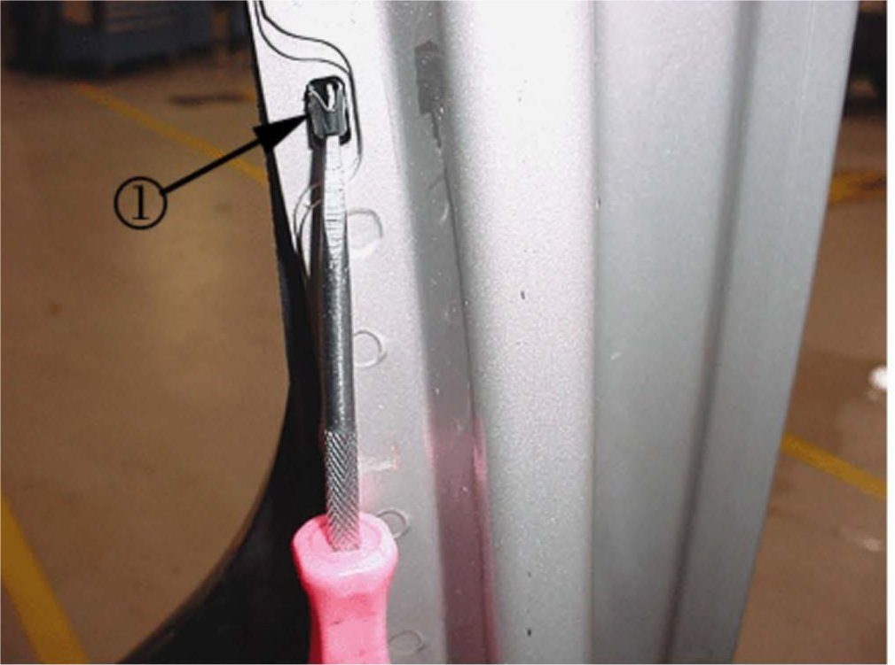
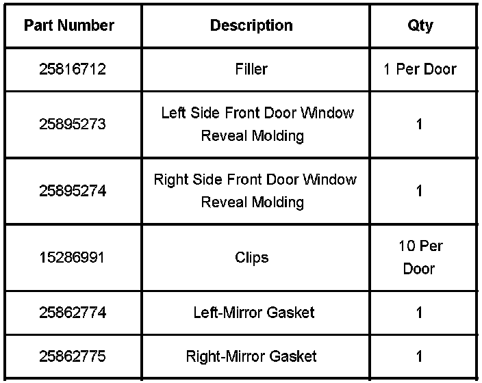
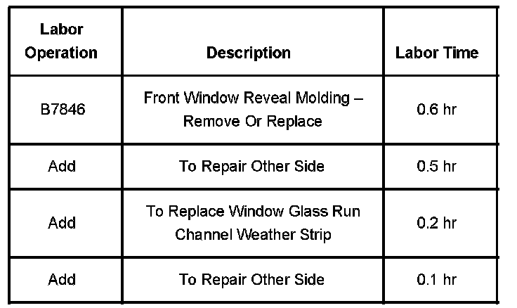

Body - Road/Wind Noise From the Front Door Area
Bulletin No.: 07-08-58-001CDate: January 24, 2008
TECHNICAL
Subject:
Road Noise / Wind Noise at Driver or Passenger Front Door Area (Install Filler and/or Reveal Molding)
Models:
2007 Cadillac Escalade, Escalade ESV, Escalade EXT
Supercede:
This bulletin is being revised to remove incorrect part numbers 25876764 and 25876763. Please discard Corporate Bulletin Number 07-08-58-001B (Section 08 - Body & Accessories).
Condition
Some customers may comment on road noise or wind noise in the driver or passenger door area.
Cause
Air may be rushing in one of the following areas:
The mirrors
Door filler
The reveal molding clips may not be properly seating into the door frame.
The seal around the reveal molding may have moved and is not sealing properly.
Correction
Remove the upper extension trim panel (mirror extension trim panel). If the mirror foam filler is missing install using the part number below.
Remove the inner window garnish molding. Refer to Front Side Door Opening Frame Garnish Molding Replacement in SI if necessary.
Remove the door trim panel. Refer to Front Side Door Trim Panel Replacement in SI if necessary.
Remove the inner door window sealing strip (door glass belt strip).
Remove the mirror. Refer to Mirror Housing in SI if necessary.

Install duct tape on the door to avoid damaging the paint when removing the molding.
Remove the outer door glass reveal molding. If the foam seal around the reveal molding is out of position as seen in illustration above replace the reveal molding . If reusing the reveal molding it is necessary to discard the old clips and use new ones.

If having difficulty lining up the reveal molding clips, you may have to loosen the door glass run channel fasteners.
Install the outer reveal molding. Start at the front of the door and work back. Use a small pick tool or screwdriver to ensure the engagement of the clip to the door frame. The clip has two small barbs one at each side that when installed properly you will hear a snap sound.
Tighten
Tighten the fasteners to 4.6 N.m (41 lb in).
Replace the window glass run channel weatherstrip.
Install a new mirror gasket prior to installing the mirror.
Install the mirror. Push up and rotate toward the A pillar to ensure a tight seal to the door and tighten the nuts.
Tighten
Tighten the three nuts to 9 N.m (80 lb in).
Install the inner door window sealing strip (door glass belt strip).
Install the door trim panel. Refer to Front Side Door Trim Panel Replacement in SI if necessary.
Install the inner garnish molding. Refer to Front Side Door Opening Frame Garnish Molding Replacement in SI if necessary.
Install the mirror filler.
Install the upper extension trim panel (mirror extension trim panel).
If wind noise is still detected after performing this bulletin refer to PIT4172 (SI Document ID # 1870968) to adjust the doors.

Parts Information
Warranty Information

For vehicles repaired under warranty, use the table.

Disclaimer